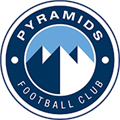
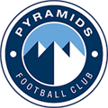

| Pyramids |
2-1 انتهت
|
 Algouna Algouna |
| Pyramids |
2-1 انتهت
|
Algouna |
 Zamalek Zamalek |
2-1 انتهت
|
Eastern |
| Mokawelon |
2-0 انتهت
|
 ElMasry ElMasry |
لا يوجد مباريات اليوم
 Alahly |
3:30 لم تبدأ
|
 Elgeish Elgeish |
| Zamalek |
6:00 لم تبدأ
|
Sporting |
لا يوجد مباريات اليوم

يستعيد المقاولون العرب، جهود مدافعه محمد سمير في اللقاء المقبل لذئاب الجبل أمام إيسترن كومباني، والمقرر إقامته يوم 9 مايو الجارى بمنافسات الجولة 18 من عمر مسابقة الدوري العام، وذلك بعد انتهاء الإيقاف. وكان سمير قد غاب عن المقاولون في المباراة الماضية أمام المصري، والتي أقيمت ضمن منافسات الجولة 17 وانتهت بفوز ذئاب الجبل بثنائية نظيفة، ولك بسبب تراكم البطاقات الصفراء. ويحتل المقاولون العرب المركز الـ 15 في الدوري العام برصيد 16 نقطة، حصدها ذئاب الجبل بعدما خاضوا 17 مباراة، حيث فاز المقاولون في 3 مباريات، وتعادلوا في 7 لقاءات وخسروا مثلهم، وأحرز لاعبو المقاولون 16 هدفًا واستقبلت شباكهم 20 هدفاً أخر.

نجح فريق كرة السلة بالنادى الأهلى فى الصعود الىنهائى بطولة دورى السوبر، بعد التغلب على الجزيرة فى منافسات نصف النهائى best of 5 بنتيجة 3\0، كما صعد الاتحاد السكندرى للنهائى أيضا بالفوز على الزمالك بنفس النتيجة. ومن المقرر أن يلتقى الأهلى مع الاتحاد السكندرى على حسم لقب بطل دورى السوبر للموسم الحالى، من خلال مباريات الدور النهائى والتى تقام بنظام best of 5 أيضا، حيث يلتقى الفريقان فى 5 مواجهات والفريق الفائز فى 3 مباريات يتوج بالبطولة. وأعلنت لجنة المسابقات باتحاد السلة عن موعد انطلاق الدور النهائى والذى تحدد له 8 مايو المقبل، على أن تقاك المباريات أيام 8 و 10 و 12 و 14 و 16 مايو بصالة حسن مصطفى بأكتوبر.

يخوض منتخب الكرة الطائرة، مباراتين وديتين يومى 8، 9 مايو الجارى أمام السعودية والبحرين على التوالى باستاد القاهرة فى إطار المعسكر المغلق الذى يدخله اللاعبون الجمعة بالتجمع الخامس ويستمر لمدة 10 أيام بدون أساسيين الأهلى والزمالك، استعدادًا لدورة البحر المتوسط المحدد لها شهر يونيو المقبل بالجزائر. ومن المقرر أن يتم تصفية اللاعبين خلال هذا المعسكر لضمهم إلى الأساسيين، حيث إن الأهلى يرتبط بالسفر إلى تونس لخوض البطولة الأفريقية و سينضم لاعبيه عقب انتهائها، بينما يحصل لاعبى الزمالك على راحة. ويتولى القيادة الفنية للمنتخب الهولندى جيدو فورمالين، حيث يأتى التعاقد مع مدير فنى فى إطار الاستعداد لخوض منافسات بطولة البحر الأبيض المتوسط بالجزائر يونيو المقبل، فضلاً عن بطولة العالم والتى سيتحدد موعد جديد لها بعد سحبها من روسيا.

طارت بعثة فريق كرة اليد بالنادي الأهلي، إلى المغرب، من أجل الدخول في معسكر تدريبي، قبل التوجه إلى النيجر، استعدادا لخوض بطولتي السوبر الإفريقي، المقرر لها 8 مايو الجاري، وكأس الكؤوس الأفريقية المقرر انطلاقها في اليوم التالي. ويستعد المارد الأحمر لخوض السوبر الإفريقي المؤهل لكأس العالم للأندية، أمام الزمالك، من أجل إنقاذ الموسم، بعد الخروج بموسم صفري على المستوى المحلي، عقب خسارة الدوري والكأس وسوبر دوري المحترفين. يمكنك الاطلاع على قائمة الفريق من هنا.

كشف محمد عبد العزيز غنيم رئيس اتحاد الملاكمة عن اختيار أشرف فتحى عضو مجلس الإدارة لرئاسة بعثة المنتخب الوطني المشارك غى بطولة الجزائر الدولية للكبار المحدد لها الفترة من 7 حتى 13 مايو المقبل. وأعلن غنيم رئيس اتحاد الملاكمة من قبل عن قائمة اللاعبين المشاركين فى البطولة وتضم قائمة اللاعبين كلا من ، عبد الرحمن عرابى و يسرى رزق وعمر الشريف وعمر عبد العزيز وعصام شكرى ومصطفى فهمى . فيما كشف محمد عبد العزيز غنيم رئيس اتحاد الملاكمة عن توجه بعثة السيدات إلى تركيا يوم 6 مايو المقبل للمشاركة فى بطولة العالم المحدد لها الفترة من 8 و حتى 21 مايو المقبل.